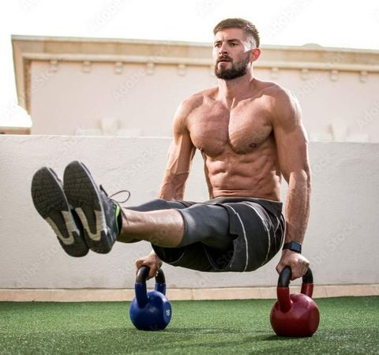
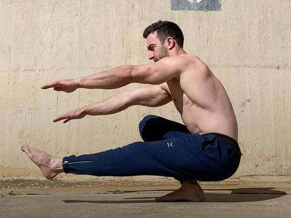

What to Expect
Our Calisthenics Program is designed to enhance your body’s natural strength using minimal equipment. Whether you're a beginner or experienced, each workout is structured to bring out your full potential.
Core Strength
Develop core stability with planks, L-sits, and static holds.
Upper Body Power
Push-up variations, dips, and pull-ups to build muscle.

Mobility & Flexibility
Incorporate stretches to improve muscle control and flexibility.

Lower Body Power
Squats, lunges, and lower body exercises to increase leg strength.
